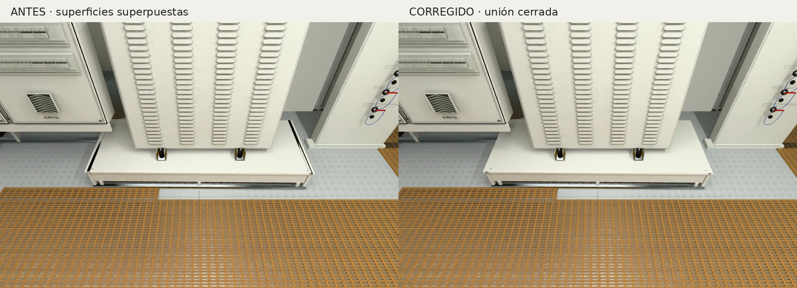

Las tapas laterales y la placa superior se superponían. Se reconstruyó la unión completa, incluidos los encuentros del frente, conservando los materiales y la iluminación de sus superficies exteriores.

La geometría comprimida pasa la comprobación de superficie cerrada y cero solapamientos en 1.496 pares coplanares. Ochenta rayos de comprobación pasan de dos superficies a una; diez rayos ocultos por otros equipos conservan su oclusión.
Movimiento y reposo: buffer constante de 900 × 600 y cero píxeles diferentes desde la misma cámara. Pruebas con Chromium/SwiftShader; no son mediciones de FPS en GPU real.
Los 629 archivos del yate original, los 73 activos protegidos de motores e inspección y los siete HDR se conservaron. El conjunto añade 228 triángulos y una llamada de dibujo.
Abrir el cuarto de máquinas · Resultados completos · Blender editable y evidencias